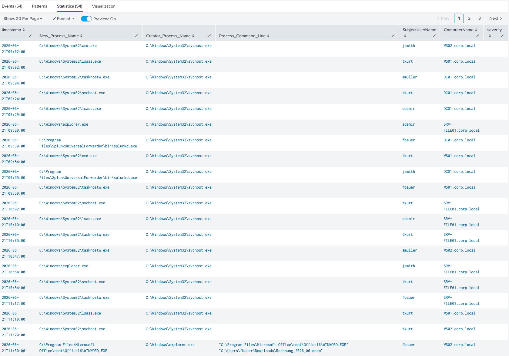
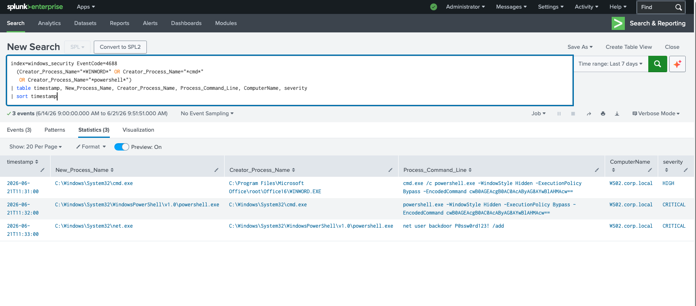
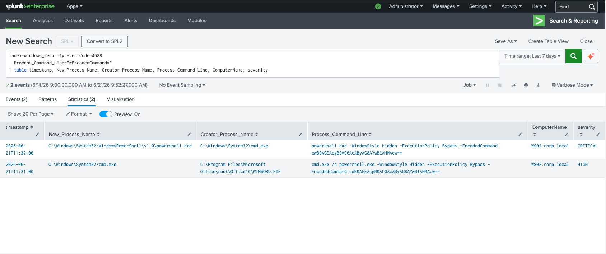
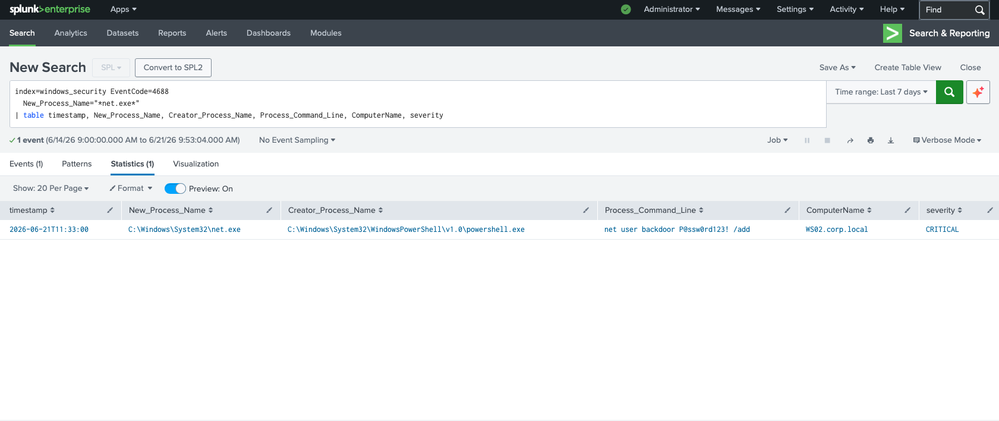

Was ist Macro Malware?
Macro Malware ist eine der ältesten und gleichzeitig effektivsten Angriffsmethoden: Der Angreifer bettet bösartigen VBA-Code in ein Office-Dokument ein — häufig als Rechnung, Lieferavis oder HR-Dokument getarnt. Öffnet der Benutzer die Datei und aktiviert Makros, startet die Payload-Ausführung automatisch.
Das entscheidende Erkennungsmerkmal: Microsoft Office-Prozesse spawnen niemals legitim Shell-Prozesse. Sobald WINWORD.EXE ein cmd.exe oder PowerShell startet, liegt ein Macro-Angriff vor.
Initial Access via Phishing: In diesem Szenario beginnt der Angriff nicht auf dem Server, sondern auf einer Workstation (WS02.corp.local) über eine harmlos wirkende Datei im Downloads-Ordner. Macro-Malware ist nach wie vor eine der häufigsten Initial-Access-Techniken — laut MITRE ATT&CK T1566.001 (Spearphishing Attachment).
Die Kill Chain — 4 Stufen in 3 Minuten
Analyse — Schritt 1: Process-Übersicht (EventID 4688)
EventID 4688 protokolliert jede neue Prozesserstellung.
Die erste Abfrage zeigt alle 54 Events — 50 davon sind normale
Hintergrundprozesse (svchost, lsass, explorer). Der zentrale
Event taucht am Ende auf: fbauer auf WS02.corp.local
öffnet um 11:30 Uhr eine .docm-Datei aus dem Downloads-Ordner.

// EventID 4688 — 54 Process Events — fbauer öffnet Rechnung_2026_06.docm via WINWORD.EXE auf WS02.corp.local
Erkennungsansatz: In 54 Events fällt der eine verdächtige kaum auf — genau deshalb ist die Wildcard-Filterung auf Parent-Prozesse der springende Punkt. Ein SIEM-Analyst filtert nicht alle Prozesse, sondern sucht gezielt nach ungewöhnlichen Parent-Child-Beziehungen.
Analyse — Schritt 2: Die Macro-Kill-Chain (WINWORD → cmd → PS → net)
Die gezielte Suche nach Parent-Prozessen aus der Office-Suite und Shell-Programmen liefert die drei kritischen Events: In 3 Minuten (11:31 bis 11:33) spawnt WINWORD.EXE eine Shell, die Shell lädt einen verschlüsselten Payload herunter, und PowerShell legt einen Backdoor-User an.

// Kill Chain: WINWORD→cmd (HIGH) → powershell -EncodedCommand (CRITICAL) → net.exe backdoor (CRITICAL) — WS02.corp.local
Drei CRITICAL Indikatoren in einem Ergebnis:
(1) WINWORD.EXE spawnt cmd.exe — in keinem legitimen Szenario möglich
(2) -ExecutionPolicy Bypass + -EncodedCommand — doppelte Umgehung
(3) net user backdoor /add — Angreifer legt Persistence-Account an
Analyse — Schritt 3: Encoded PowerShell isolieren (4688)
Die gezielte Suche nach -EncodedCommand im Command-Line-Feld
zeigt beide Stufen der Payload-Übermittlung: zuerst das cmd.exe-Wrapper-Kommando,
dann direkt powershell.exe mit dem gleichen Base64-String. Beide Events
stammen von WS02.corp.local und zeigen denselben Encoded-Payload.

// -EncodedCommand Filter: 2 Treffer — cmd.exe (HIGH) + powershell.exe (CRITICAL) mit identischem Base64-Payload — WS02.corp.local
-ExecutionPolicy Bypass + -EncodedCommand: Diese Kombination
ist eine klassische AMSI- und Script-Block-Logging-Umgehung. Der Angreifer
verhindert damit, dass der PowerShell-Code im Klartext in Security-Logs landet.
Dennoch bleibt der Base64-String sichtbar —
cwB0AGEAcgB0AC0AcAByAG8AYwBlAHMAcw== dekodiert zu
"start-process" (UTF-16LE).
Analyse — Schritt 4: Backdoor-User mit net.exe
Der letzte und kritischste Schritt: PowerShell führt net.exe
aus mit dem Command net user backdoor P@ssw0rd123! /add.
Der Angreifer legt einen lokalen Benutzeraccount direkt auf der
Workstation an — eine einfache, aber wirkungsvolle Persistence-Methode,
die ohne Domain Controller auskommt.

// EventID 4688 — net.exe von powershell.exe — net user backdoor P@ssw0rd123! /add — WS02.corp.local — Severity: CRITICAL
Backdoor-Credential im Klartext:
net user backdoor P@ssw0rd123! /add — das Passwort erscheint
unverschlüsselt in den Process-Command-Line-Logs. Der Angreifer hat nun einen
lokalen Account auf WS02 und kann sich mit RDP oder SMB erneut einloggen,
auch wenn alle anderen Konten gesperrt werden.
Warum ist EventID 4688 so wichtig?
Incident Response — Was als nächstes?
Prävention:
(1) Makros deaktivieren per GPO — Microsoft 365 Apps blockiert
Internet-Makros seit 2022 standardmäßig.
(2) Attack Surface Reduction Rules (ASR) in Defender:
Rule "Block Office applications from creating child processes" direkt verhindert
WINWORD → cmd.
(3) PowerShell Constrained Language Mode verhindert
-ExecutionPolicy Bypass.